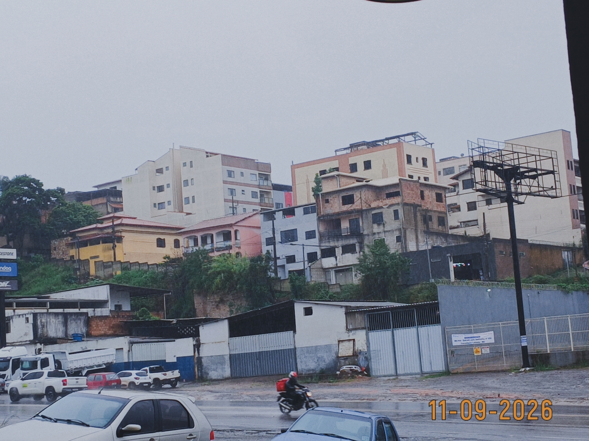

2026-11-03 14:43
Início do Blog
Falarei sobre os vídeos e o Saturv, não espere que eu seja regrado quanto a isso.
Por que me prensei por dias nesse problema?
Em sistemas como o Windows ou Linux, ao criarmos um programa e precisarmos de mais espaço para alocar uma nova variável ou um array (como uma lista de arquivos), simplesmente chamamos a função realloc() presente na biblioteca padrão do C. O sistema operacional encontra um pedaço de RAM vago, coloca nossos dados nele e retorna o ponteiro. Tudo pronto!
O que acontece quando VOCÊ é o sistema operacional?
Aí as coisas ficam complicadas. No desenvolvimento do SaturvOS (bare metal), eu não possuo nenhuma biblioteca padrão — portanto, não tenho malloc(), free() ou realloc(). Eu falo diretamente com o hardware, mexo na RAM bit a bit.
Nos últimos 5 dias, o que me prendeu não foi o design da interface gráfica, mas o gerenciamento dinâmico de memória no Disco Virtual. Esse problema se resume a 3 pesadelos:
1. A Dança dos Ponteiros
Sempre que um novo arquivo é criado, renomeado ou movido no array disco_virtual, blocos inteiros de memória precisam ser deslocados. Se um único byte for calculado errado, a string que armazena o nome do arquivo não será encontrada. O kernel lerá lixo na memória, causando um crash no sistema todo.
2. Sincronia com a Interface Gráfica
A função draw_main_window() roda a dezenas de frames por segundo. Se ela tentar ler o array de arquivos no exato milissegundo em que a memória está sendo movida para incluir um novo arquivo, a tela irá congelar. Isso explica por que, pela manhã, a tela de renomear arquivos vinha bugando ou mostrando nomes incorretos.
3. Fragmentação do Heap
Como ainda não possuo um gerenciador de memória avançado, precisei criar uma lógica para que não houvesse "buracos" na RAM após a exclusão ou renomeação de arquivos. Isso garante que o text_buffer e os índices do disco estejam sempre perfeitamente alinhados.
Conclusão
Eu não estava criando apenas um explorador de arquivos: eu estava criando o próprio motor de memória para que ele pudesse existir. Na hora de fazer tudo do zero, os ponteiros não perdoam. Porém, quando apertamos ENTER e vemos o nome do arquivo ser modificado diretamente na matriz da memória física, sem utilizar código de terceiros, é aí que percebemos o verdadeiro poder do baixo nível.
